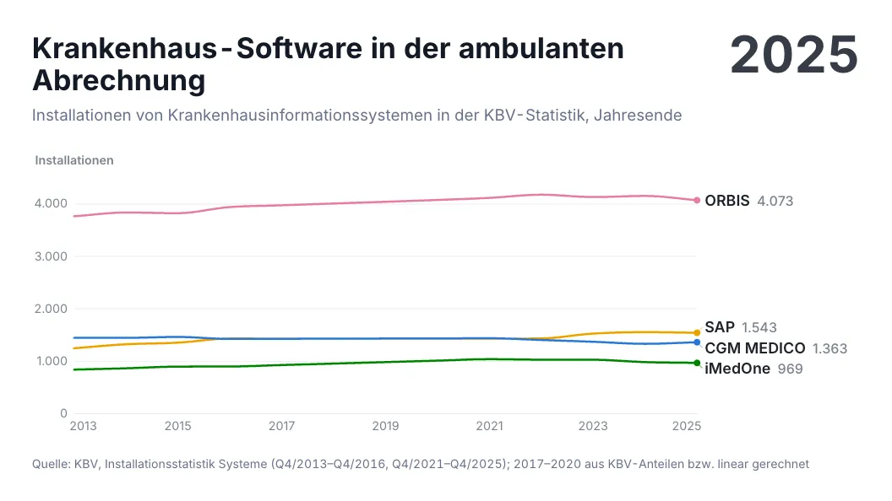
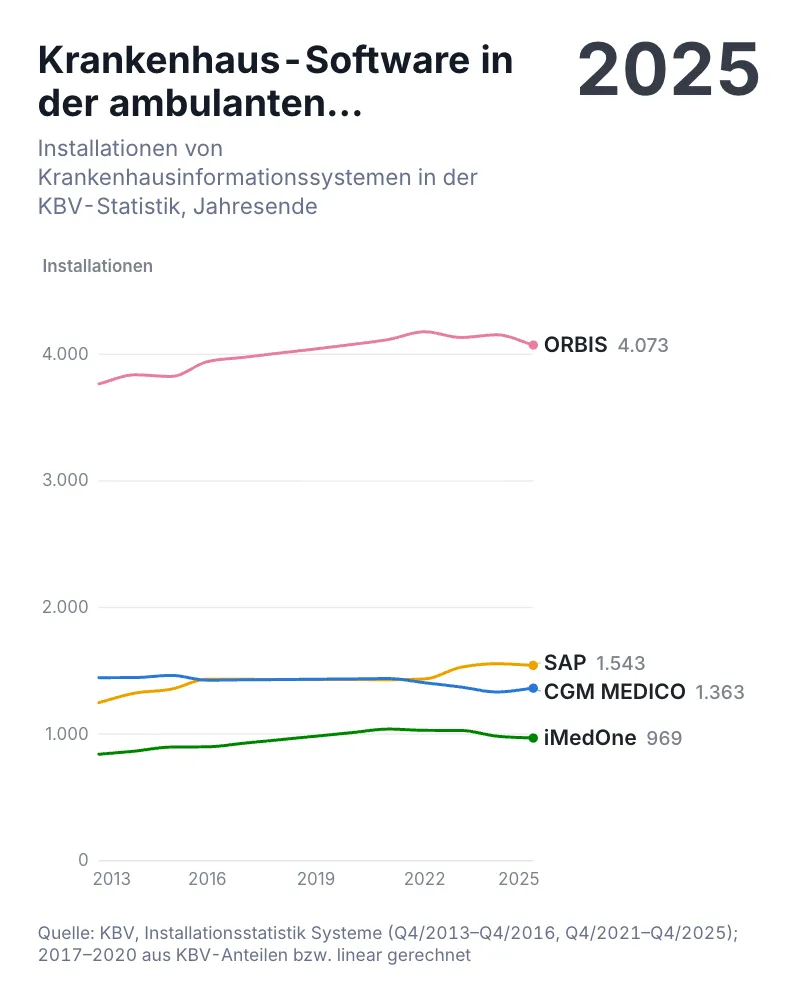

Krankenhaus-Software in der ambulanten Abrechnung
Vier Krankenhausinformationssysteme stehen in der Statistik der Praxissoftware der Kassenärztlichen Bundesvereinigung (KBV): ORBIS mit 4.073 Installationen Ende 2025, SAP Ambulatory Care Management mit 1.543, CGM MEDICO mit 1.363 und iMedOne mit 969. Zusammen sind das 7.948, 6,8 Prozent aller Installationen. Mit ihnen rechnen Krankenhäuser ihre ambulanten Leistungen bei den Kassenärztlichen Vereinigungen ab.


Das Wichtigste in Kürze
- Kaum Wachstum: 7.302 Installationen Ende 2013, 7.948 Ende 2025. Der Anteil an allen Installationen stieg von 6,2 auf 6,8 Prozent.
- ORBIS führt mit 51,2 Prozent der vier Systeme, seit 2022 leicht rückläufig. SAP wuchs seit 2013 um 23,5 Prozent.
- SAP läuft aus: Das SAP-Modul gehört zum Patientenmanagement SAP IS-H, für das SAP keinen Nachfolger baut. Die Wartung endet Ende 2027, gegen Aufpreis Ende 2030.
- Schnittstellen: ORBIS, CGM MEDICO und iMedOne haben die KBV-Zulassung für den eArztbrief, SAP nicht. Den Import von Laborbefunden nach LDT hat keines der vier zertifiziert.
1.543 Installationen suchen einen Nachfolger
SAP hat im Oktober 2022 angekündigt, das Patientenmanagement IS-H nicht in die neue Generation S/4HANA zu übernehmen. Für die Krankenhäuser heißt das: Bis spätestens Ende 2030 muss ein Ersatz laufen, auch für die ambulante KV-Abrechnung, die heute über SAP Ambulatory Care Management geht. Nachfolger bieten andere Hersteller an, etwa auf SAP-Basis oder mit eigenen Abrechnungssystemen.
Für Schnittstellenanbieter ist das einer der wenigen Wechsel im Markt, die ein festes Datum haben. Mit dem Abrechnungssystem wechseln auch dessen Schnittstellen, mindestens die zur KV-Abrechnung.
Klinik-MVZ: mit dem KIS oder mit Praxissoftware?
Die Zahl der MVZ mit einem Krankenhaus als Träger stieg zwischen 2015 und 2025 von 910 auf 2.659, also um 1.749. Die Installationen der vier Krankenhaussysteme wuchsen im selben Zeitraum nur um 406. Rechnerisch kann deshalb höchstens knapp ein Viertel der neuen Krankenhaus-MVZ mit einem dieser Systeme abrechnen – vorausgesetzt, die übrigen Abrechnungen aus Krankenhausambulanzen sind nicht weniger geworden. Das weist die KBV nicht aus.
Beide Wege gibt es: Hersteller von Krankenhaussystemen bieten die ambulante Erfassung für MVZ an, Hersteller von Praxissoftware werben um MVZ und Klinikambulanzen. Welches System ein Krankenhaus-MVZ nutzt, zählt niemand.
Was die Zahl nicht sagt
- Installationen sind keine Krankenhäuser. Die KBV zählt Abrechnungen mit der Prüfnummer eines Systems. Ein Krankenhaus mit mehreren abrechnenden Ambulanzen kann mehrfach zählen.
- Nur die großen vier. Kleinere Krankenhaussysteme sind nicht einzeln erfasst.
- MVZ und Installationen sind verschiedene Einheiten. Die Rechnung oben ist eine Obergrenze, keine Messung, und gehört nicht in eine gemeinsame Grafik.
- 2017 bis 2020 sind gerechnet. Die KBV hat für diese Jahre nur Anteile in Prozent veröffentlicht.
Gerechnet
16 von 52 Werten der Grafik sind gerechnet, alle in den Jahren 2017 bis 2020: ORBIS aus den KBV-Anteilen für Q3/2017 und Q3/2020, die übrigen Systeme linear zwischen 2016 und 2021. Die Anteile, die Veränderungen und die Obergrenze für Krankenhaus-MVZ (406 von 1.749) sind aus belegten Werten gerechnet. Methode je Wert in der Datenherkunft.
Quelle und Methode
Kassenärztliche Bundesvereinigung, Installationsstatistiken der Praxisverwaltungssysteme, Jahresenden 2013 bis 2016 und 2021 bis 2025; Zulassungsverzeichnisse (Stand 21.10.2026); Entwicklungen der Medizinischen Versorgungszentren (Stichtag 31.12.2025). Zu SAP IS-H: SAP News, November 2022, Deutsche Telekom, Pressemitteilung, Taylor Wessing, Mai 2026. Abgerufen am 22. Oktober 2026. Wie die MVZ wachsen, zeigt MVZ wachsen, ärztliche Einzelpraxen schrumpfen, alle Systeme die Übersicht Praxisverwaltungssysteme in Deutschland.
Häufige Fragen
Mit welcher Software rechnen Krankenhäuser ambulant ab?
In der KBV-Statistik am häufigsten mit ORBIS (Dedalus HealthCare), SAP Ambulatory Care Management, CGM MEDICO (CGM Clinical) und iMedOne (Deutsche Telekom Clinical Solutions), zusammen 7.948 Installationen Ende 2025.
Wann endet SAP IS-H?
SAP hat die Wartung bis Ende 2027 zugesagt, gegen Aufpreis bis Ende 2030. Einen Nachfolger in S/4HANA baut SAP nicht; Ersatz kommt von anderen Herstellern.
Nutzen Krankenhaus-MVZ das Krankenhausinformationssystem?
Das ist nicht gezählt. Die Krankenhaussysteme wuchsen seit 2015 aber um 406 Installationen, die Krankenhaus-MVZ um 1.749. Wenn die übrigen Klinikambulanzen nicht weniger wurden, rechnet die Mehrheit der neuen Krankenhaus-MVZ mit anderer Software ab.